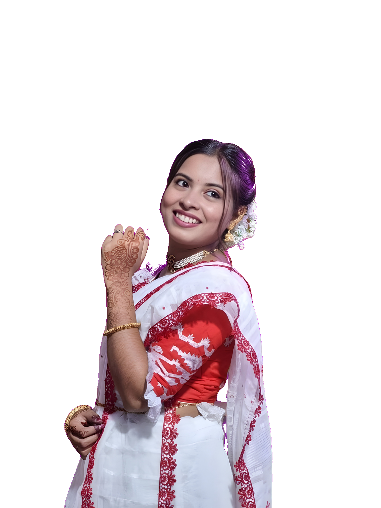

Where Voice Meets Verses, and Words Find Their Soul.
Immerse yourself in the sacred art of Bengali poetry recitation, acoustic voice modulation, phonetic perfection, and dramatic stage deconstruction. Guided by celebrated maestros for young seekers and passionate performers alike.
The Sacred Triad of Recitation
At Kabyangan, recitation is not mere reading aloud; it is an intimate communion between the poet's pulse, the reciter’s breath, and the listener's heart.
Swara (কণ্ঠস্বর সাধনা)
Mastering diaphragmatic breathing, throat relaxation, and vocal projection. Project effortless clarity and authority without strain across grand auditoriums.
Chhanda (ছন্দ ও লয়)
Unraveling the rhythmic heartbeat of Bengali metrics. From traditional Matrabritta and Aksharbritta to the fluid, breathing pauses of modern free verse.
Bhav (রস ও অভিব্যক্তি)
Infusing each syllable with genuine emotional truth. Cultivating stage poise, expressive eyes, silence as a musical instrument, and theatrical presence.
Academic Courses & Masterclasses
Designed for diverse age groups and skill levels — from budding children building foundational speech habits to seasoned performers perfecting their stage craft.
Prathamik: Voice & Diction
প্রাথমিক স্তর • উচ্চারণ ও ধ্বনিবিজ্ঞান
A playful yet deeply disciplined introduction for young reciters. Focuses on removing tongue inertia, Bengali alphabet phonetics, clear diction, and joy of nursery rhymes & classic poems.
Madhyamik: Poetic Cadence
মাধ্যমিক স্তর • ছন্দ ও রসায়ন
For adolescents and adults seeking to master poetic meters, pitch modulation, and emotional storytelling. In-depth analytical reading of Bengali literary masterpieces.
Ucchatara: Stage Declamation
উচ্চতর স্তর • মঞ্চাভিনয় ও শ্রুতিনাটক
Curated for stage performers, audio-drama artists, and broadcasters. Covers Shruti-Natak (audio drama), background score synchrony, lighting dynamics, and solo recitals.
Virtual Interactive Batch
অনলাইন সরাসরি ব্যাচ • দূরত্ব ঘুচিয়ে বাচনিক সাধনা
Connecting Bengali poetry enthusiasts via live distance coaching. Small batch sizes (max 8 students) with 1-on-1 personalized feedback sessions adapted to flexible weekend schedules.
Executive: Public Oratory
কণ্ঠস্বর প্রশিক্ষণ ও বাচনিক দক্ষতা
A specialized executive coaching track for lawyers, educators, podcasters, anchors, and corporate leaders who wish to develop an authoritative, melodious, and captivating speaking presence.
Shruti-Natak: Audio Drama
শ্রুতিনাটক ও যুগল পরিবেশনা
Master the delicate art of dramatic dialogue, vocal character transformation, and acoustic cues. Includes script adaptation from famous Bengali short stories and radio drama production.
Immerse in the Cadence of Verses
Listen to curated recitation renditions by the faculty and senior scholars of Kabyangan. Notice the delicate interplay of silence, breath control, and acoustic tonal balance.
প্রতিষ্ঠাত্রী ও অধ্যক্ষার সারস্বত খেরোখাতা
পাতা উল্টে পড়ুন কাব্যাঙ্গন প্রতিষ্ঠার অনন্য ইতিহাস, দর্শন ও সারস্বত বার্তা
কাব্যাঙ্গন
ACADEMY OF ELOCUTION & PERFORMING ARTS
প্রতিষ্ঠাত্রীর কলমে • সারস্বত সংকলন
স্থাপিত ২০২৬ • সাউদার্ন অ্যাভিনিউ, তিলোত্তমা কলকাতা
সুদীপ্তা শাসমল
SUDIPTA SASMAL
প্রতিষ্ঠাত্রী ও প্রধান নির্দেশিকা • কাব্যাঙ্গন আবৃত্তি শিক্ষাকেন্দ্র
কণ্ঠের সাধনা আত্মাকে সমৃদ্ধ করে
স্নেহের শিক্ষার্থী ও সুধী সাহিত্যপ্রেমী বন্ধুগণ,
আবৃত্তি কোনো বাহ্যিক অলঙ্কার বা নিছক শব্দোচ্চারণ নয়—এটি হৃদয়ের গভীরতম অনুভূতির নিঃশব্দ থেকে সুর ও ধ্বনিতে রূপান্তরের এক পরম সারস্বত শিল্প। ২০২৬ সালে কাব্যাঙ্গনের ভিত্তিপ্রস্তর স্থাপনের মুহূর্তে আমার সংকল্প ছিল একটি খাঁটি, আপসহীন বাচিক পীঠস্থান গড়ে তোলা, যেখানে বাংলা কবিতার মর্যাদা ও বাচনিক নান্দনিকতা অগ্রাধিকার পাবে।
বর্তমান কোলাহলপূর্ণ যুগে শুদ্ধ ও সুষমামণ্ডিত বাংলা উচ্চারণ কেবল একটি নান্দনিক পাঠাভ্যাসমাত্র নয়, এটি আমাদের সংস্কৃতির আত্মপরিচয়ের এক পবিত্র রক্ষাকবচ। কাব্যাঙ্গনে আমরা প্রতিটি শিক্ষার্থীর নিজস্ব বাচিক সম্ভাবনাকে পরম স্নেহে ও শৃঙ্খলিত অনুশীলনে বিকশিত করি।
কবিতার আত্মাকে উপলব্ধির মার্গ
কাব্যাঙ্গনে আবৃত্তি শিক্ষাদান কোনো যান্ত্রিক মুখস্থবিদ্যার নামান্তর নয়। এখানে স্বর প্রক্ষেপণ (Voice Projection), বৈদিক ও আধুনিক ছন্দের অন্তর্নিহিত সুর, এবং ভাবানুসঙ্গের গভীর মনস্তাত্ত্বিক রূপায়ণকে বৈজ্ঞানিক পদ্ধতিতে শেখানো হয়।
রবীন্দ্রনাথ, নজরুল, জীবনানন্দ দাশ থেকে শুরু করে আধুনিক বাংলা সাহিত্যের শ্রেষ্ঠ রত্নমালাকে কণ্ঠের জাদুতে রূপায়িত করাই আমাদের ব্রত। নিয়মিত মাইক্রোফোন ট্রেইনিং, সাউন্ড মড্যুলেশন ও মঞ্চোপস্থিতির মাধ্যমে প্রতিটি শিক্ষার্থী নিজের ভেতরে এক অভিনব আত্মবিশ্বাস খুঁজে পায়।
কাব্যাঙ্গনের আঙিনায় সাদর আমন্ত্রণ
কবিতার গভীরে অবগাহন করার এই আনন্দযাত্রায় কাব্যাঙ্গনের আঙিনায় আপনাকে ও আপনার প্রিয় সন্তানকে জানাই আন্তরিক সাদর আমন্ত্রণ। আসুন, বাচিক শিল্পের এই আলোকময় পথে আমরা একসাথে পদচারণা করি এবং কণ্ঠে ধারণ করি শাশ্বত বাংলার প্রাণস্পন্দন।
Sudipta Sasmal
সুদীপ্তা শাসমল
প্রতিষ্ঠাত্রী ও অধ্যক্ষা • কাব্যাঙ্গন আবৃত্তি শিক্ষাকেন্দ্র
“কবিতা হোক জীবনের সুর, কণ্ঠ হোক শুদ্ধ ও সমুন্নত।”
সারস্বত শিক্ষাঙ্গন
সাউদার্ন অ্যাভিনিউ, লেক এরিয়া, কলকাতা • পশ্চিমবঙ্গ ৭০০০২৯
শনিবার ও রবিবার: সরাসরি বাচনিক স্টুডিও সেশন
A Symphony of Moments & Performances
Glimpses from Kabyangan's annual cultural festivals, masterclass workshops, and proud student recitals at Rabindra Sadan, Nandan, and Kala Mandir.


Words from Our Literary Family
Read how Kabyangan has instilled confidence, flawless pronunciation, and deep poetic reverence in learners of all generations.
“Enrolling my 9-year-old daughter at Kabyangan has been life-changing. Her earlier hesitation with Bengali pronunciation has transformed into graceful clarity. Watching her recite Tagore at Rabindra Sadan brought tears to our eyes.”
“As a corporate professional, I always harbored a secret love for Bengali poetry but lacked proper breath control and cadence. The weekend adult batch at Kabyangan gave me the exact technical grounding and stage confidence I yearned for.”
“Joining the interactive virtual studio batch was an eye-opening experience. The faculty pays surgical attention to micro-tonal variations and sibilant sounds. Kabyangan has completely elevated my stage confidence.”
Begin Your Transformation
Whether you are taking your first steps in Bengali speech or seeking to command the stage with dramatic elocution, our doors are warmly open for your audition.
Audition & Admission Inquiry
Fill in the details below to schedule an initial diagnostic voice evaluation or enroll in an upcoming batch.
Frequently Asked Questions
Everything you need to know about auditions, course structure, age criteria, and stage opportunities at Kabyangan.